繪圖功能介紹與操作教學
- 直線
- 圓形
- 矩形
- 曲線
- 三角形
- 箭號
- 文字
- 鋼筆連續曲線
- 顏色選擇
- 線條粗細
- 輔助網格
- 返回
- 清除畫布
- 輸出圖片
-
直線
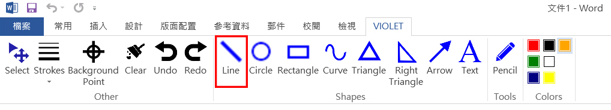
滑鼠左鍵點擊，拖曳即可畫出，可以360度的方向繪出直線。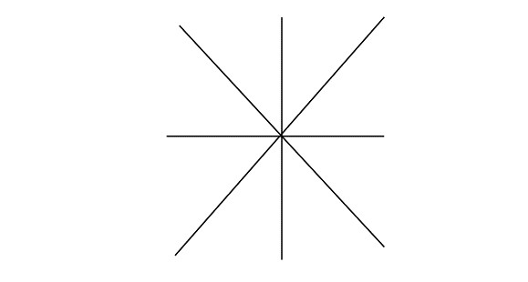
滑鼠左鍵點擊，拖曳即可畫出，可以360度的方向繪出直線。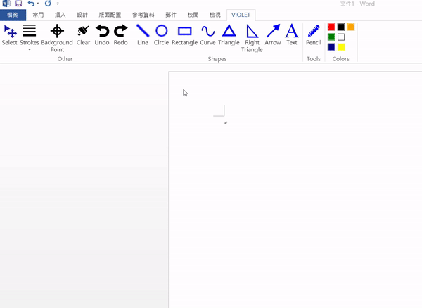
-
圓形
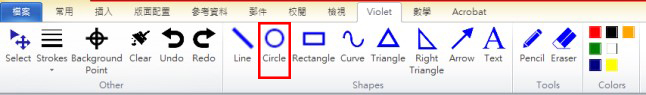
滑鼠點擊後，以拖拉方式可360度旋轉亦可反轉。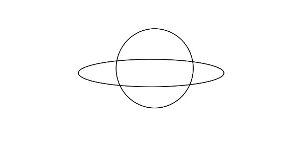
滑鼠點擊後，以拖拉方式可360度旋轉亦可反轉。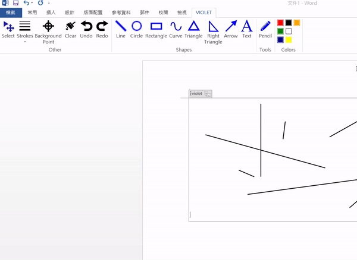
-
矩形
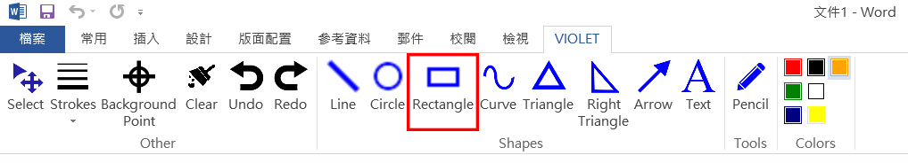
滑鼠左鍵點擊，拖曳即可畫出。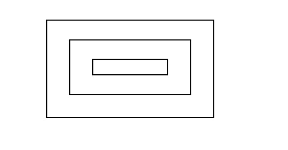
滑鼠左鍵點擊，拖曳即可畫出。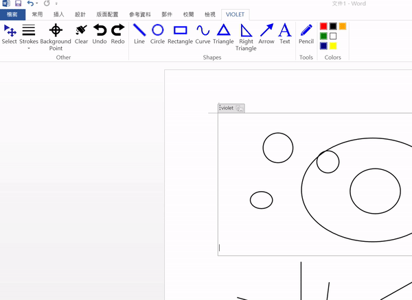
-
曲線
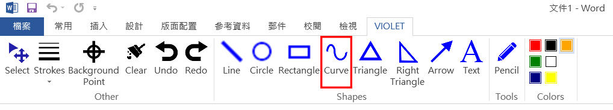
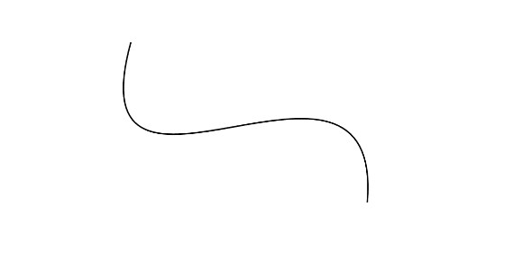
拖曳出一條直線，藉由點出兩個點作為參考點繪出曲線。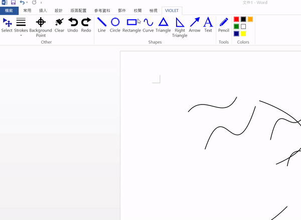
-
三角形
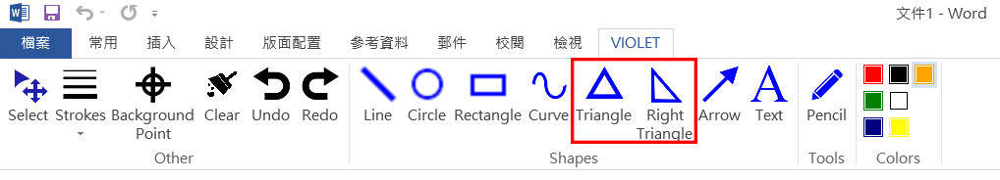
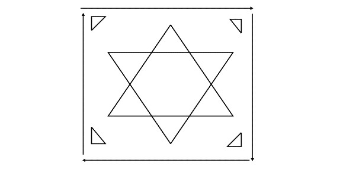
滑鼠左鍵點擊，拖曳即可畫出。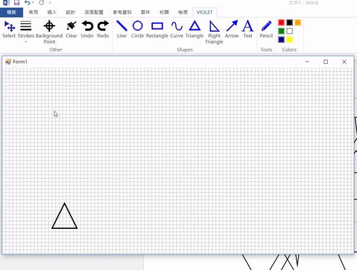
-
箭號
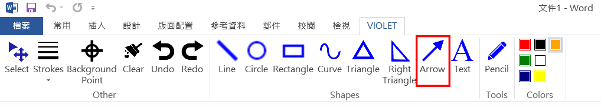
滑鼠左鍵點擊，拖曳即可畫出。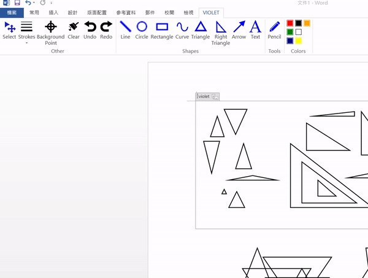
-
文字
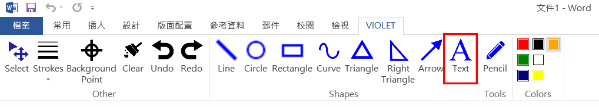
左鍵點擊欲放置文字的位置，打出文字後隨意用左鍵點擊任意位置可綁定文字。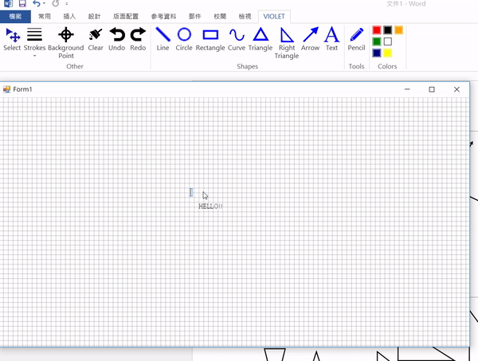
-
鋼筆連續曲線


用滑鼠左鍵做出點，參照出點繪出圓滑的連續曲線，欲結束一線段時，點擊右鍵即可。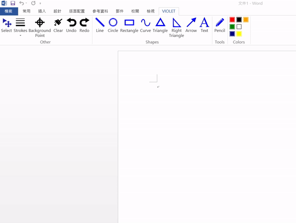
-
顏色選擇
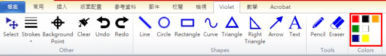
先點擊選擇顏色，再按欲繪出的圖形進行繪圖。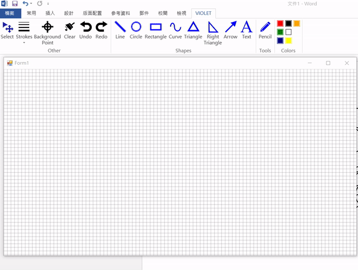
-
線條粗細
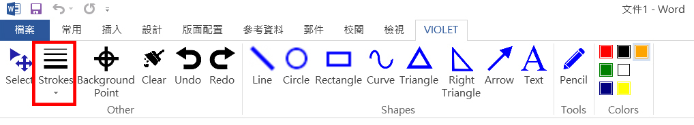
先選擇線條粗細，再按欲繪出的圖形進行繪圖。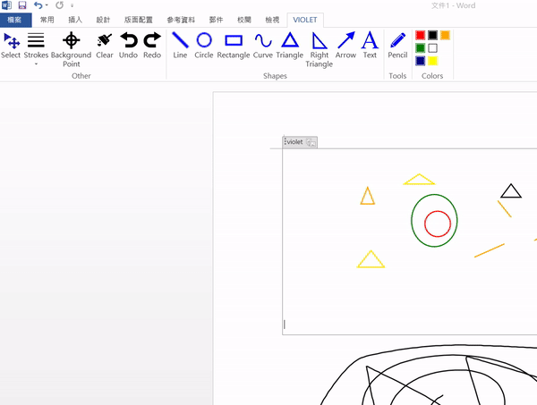
-
輔助網格
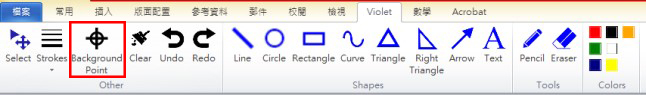
按下按鈕切換模式，輔助網格不影響輸出結果。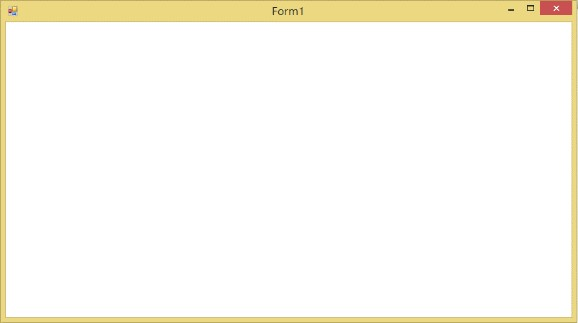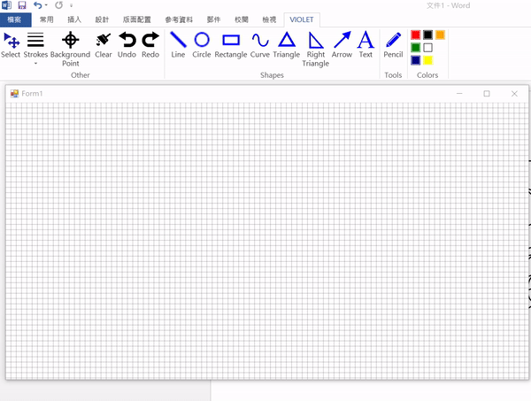
-
返回
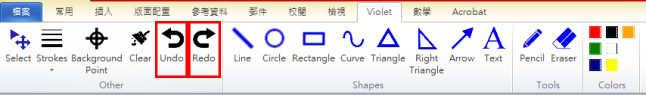
可進行上一步下一步。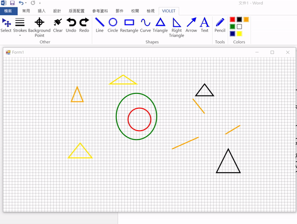
清除畫布
按下按鈕，經過確認後，清除整個畫布的所有圖。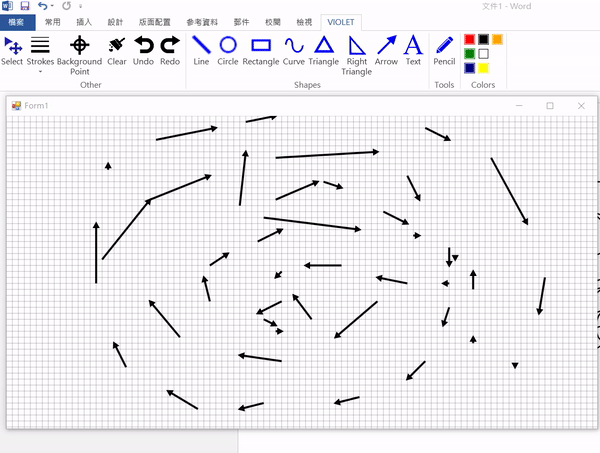
輸出圖片
按下XX結束繪圖後，會自動生成圖片於WORD文件中。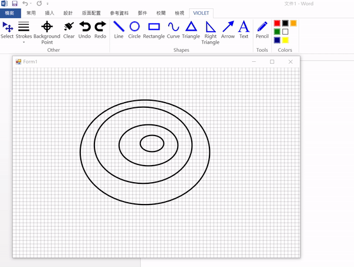